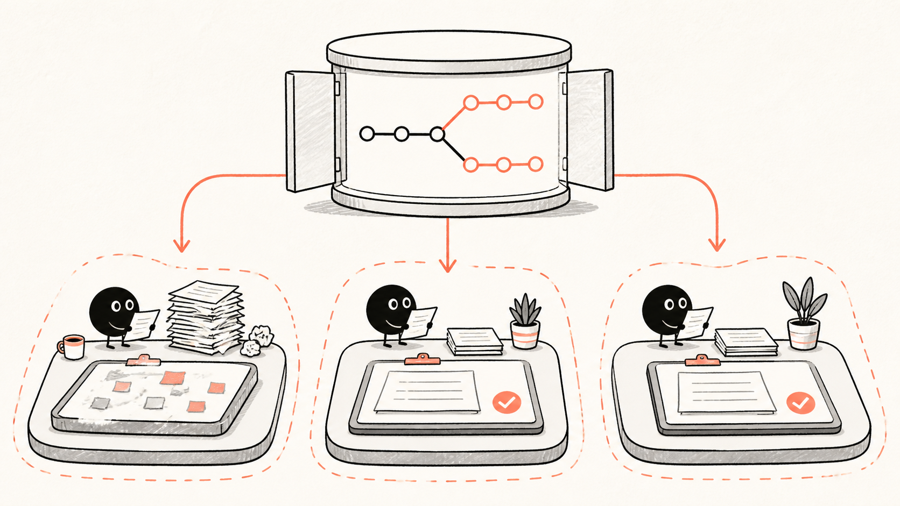
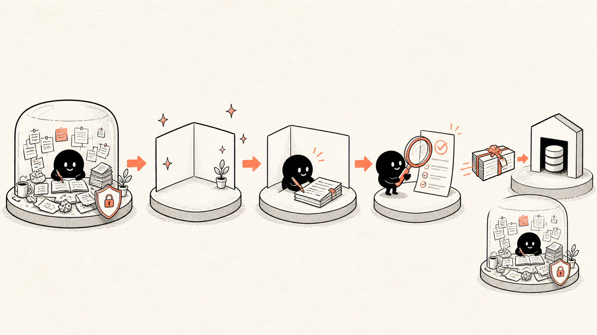

够用的 Git 基础
Git 只保留四个概念
HEAD 表示当前 checkout 的提交；branch 让一条提交线有名字；remote 是远程仓库别名；PR 不是 Git 对象，而是托管平台上的审查流程。理解这些已经足够进入 Worktree。
先读现场
先看工作树，再决定是否开 Worktree
git status --short --branch
git diff
git diff --cached
git worktree list
git remote有不认识的修改或未跟踪文件时先停下确认归属，不要 reset、restore 或“清理干净”。
git worktree list 会列出主工作树、linked worktrees、各自 checkout 和是否为 detached HEAD。
新功能、长测试、并行修复或需要保持 Local 不动时，优先新建 Worktree。
git remote 只列远程名称。完整 URL 可能含凭据或 token，不要回显、复制或贴进 prompt、日志和报告。
核心模型
Worktree 才是任务隔离主线
一个 Git repository 可以拥有一个 main worktree 和多个 linked worktrees。每个 Worktree 有独立目录、独立 index、独立 HEAD 和独立未提交状态；它们共享 commits、常规 refs 和大部分仓库配置。这样，新任务不必覆盖或暂存 Local 的现场。

高频闭环
保留 Local，创建 clean Worktree，再交付
记录 git status，不回滚、不 stash、不吸收用户已有修改。
确认后 fetch 远程状态，以项目规则指定的 <base> 为新任务起点。
创建独立目录并附着任务名称；分支命名只是承载任务，不是这一步的学习重点。
在新目录只改目标文件，运行 focused checks，审查 diff 和暂存快照。
commit、PR 或 Hand off 完成后先确认无独有工作；删除 Worktree 必须有明确授权。
git status --short --branch
git worktree list
git fetch origin
cd "$(git rev-parse --show-toplevel)"
git worktree add -b codex/<task> "../<repo>-<task>" origin/<base>
git -C "../<repo>-<task>" status --short --branch
git -C "../<repo>-<task>" diff把占位符替换成自己的值：<repo> 是当前仓库目录名，<task> 是简短且未占用的任务标识，<base> 是项目规则确认的起点分支名（例如 main，命令会从 origin/<base> 取基线）。相对目标路径 ../<repo>-<task> 应位于当前仓库根目录外的 sibling；上面的 cd 会先把 shell 切到仓库根目录，所以即使前面的检查从子目录开始也不会把 Worktree 放错位置。
创建后用 git -C "../<repo>-<task>" status --short --branch 做稳定检查：结果应表明当前位于预期任务 branch（或明确为 detached HEAD），且工作树为 clean、没有未提交文件；这里只看 branch 与 clean-state 的含义，不要匹配某个 Git 版本的固定输出。如果提示目标路径已存在或名称冲突，停止并改用未占用的 <task> 或目标路径，不要覆盖已有目录。
git fetch origin 不会改 working-tree 文件，也不会修改远程仓库；它会更新本地 remote-tracking refs、FETCH_HEAD 等 Git 元数据，因此执行前仍要确认操作边界。

在 Codex Desktop 中可直接为新任务选择 Worktree；需要回到本机前台继续时使用 Hand off。完整界面操作、detached HEAD 和 .worktreeinclude 说明见 Worktrees 专页。
安全边界
Worktree 最容易踩的五个坑
- 同一 branch 不能同时 checkoutGit 默认拒绝把同一 branch 放进两个 Worktree；不要用
--force绕过保护。 - 共享历史仍会互相可见一个 Worktree 新建 commit 或 branch 后，其他 Worktree 能看到这些 Git 对象；独立的是工作目录，不是另一个 repository。
- Ignored 文件不一定自动出现本地配置、依赖目录和未跟踪资产要按项目规则重新准备，不能假设新 Worktree 与 Local 完全相同。
- 不要直接删除目录先用
git worktree list定位，再确认 clean、已交接且获授权，最后才执行git worktree remove <path>。 - 不要把
--force当清理按钮强制删除可能丢失未提交和未跟踪文件；不确定时保留 Worktree 并报告 blocker。
匿名历史案例 · 只读历史会话
匿名案例：为什么高频使用 Worktree
只读历史会话反复出现同一类现场：Local 正在跑实验、保留人工修改或等待验证，此时又来了独立修复。安全做法不是先研究如何切换 branch，而是保留 Local → 从确认过的 base 创建 clean Worktree → 窄改 → 验证 → 由主线程统一交付。源项目未被修改，也不向本页提供修改权限。
与 Codex 协作 · CLI / 手动路径
可复制的 Worktree 任务请求
我有一个新的独立任务，请优先判断是否需要 Worktree。
先只读检查 git status --short --branch 和 git worktree list。
如果 Local 有无关改动，必须完整保留，不要 stash、reset、restore 或清理。
从项目规则指定的 <base> 创建 clean Worktree；只修改 <目标文件>。
在新 Worktree 运行 <focused checks>，报告 diff、验证结果和剩余风险。
不要自行删除 Worktree、branch、未跟踪文件，也不要 push 或创建 PR；需要时先请求授权。
最终给出：Worktree 路径、改动文件、验证证据、交接方式和清理前置条件。资料边界
事实、案例与项目规则分开
Git 对多个 working trees 的共享/独立边界来自上游 （外部链接）git-worktree 文档；Codex Desktop 的 Worktree 与 Hand off 行为来自 （外部链接）OpenAI Worktrees 文档。匿名案例只来自只读历史会话，应用前仍要读取自己仓库当前的 AGENTS.md、验证命令与清理授权规则。